Sortwick : Jeu de tri cosyRange les étagères. Rénove la ville.
Range les étagères. Fais des trios. Redonne vie à une petite ville au bord de la mer et fais connaissance avec ceux qui y vivent.
Gratuit sur iPhone · Jouable hors ligne · Sans compte


Sortwick, c'est quoi ?
Sortwick est un jeu de tri d'objets gratuit pour iPhone et iPad. Tu déplaces les objets d'une étagère à l'autre, tu en réunis trois identiques pour les faire disparaître, et tu dépenses les étoiles gagnées pour rénover Saltwick, une petite ville au bord de la mer. Un puzzle de rangement cosy pour les adultes qui aiment l'ordre et un vrai défi : règles de triple match, des centaines de niveaux, jouable hors ligne.
- Gratuit sur iPhone
- iOS 17 ou plus récent
- Jouable hors ligne
- 9 langues
- Sans compte
Le jeu en 10 secondes
Déplace les objets d'une étagère à l'autre et forme des trios pour les faire disparaître. Chaque niveau a une solution, et chaque victoire rapporte des étoiles que tu dépenses pour rénover Saltwick : le phare, le café, la lanterne, un lieu à la fois.
Touche un objet, puis une étagère
Tu déplaces un objet à la fois vers une étagère qui a une place libre.
Trois identiques disparaissent
Réunis trois objets identiques et ils libèrent l'étagère.
Gagne des étoiles, rénove Saltwick
Chaque niveau réussi rapporte des étoiles pour le prochain lieu de la ville.
Un aperçu du jeu
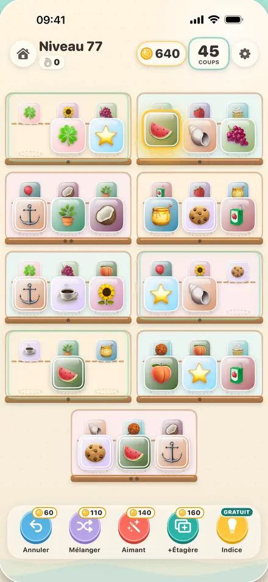
Trois identiques, étagère vidée 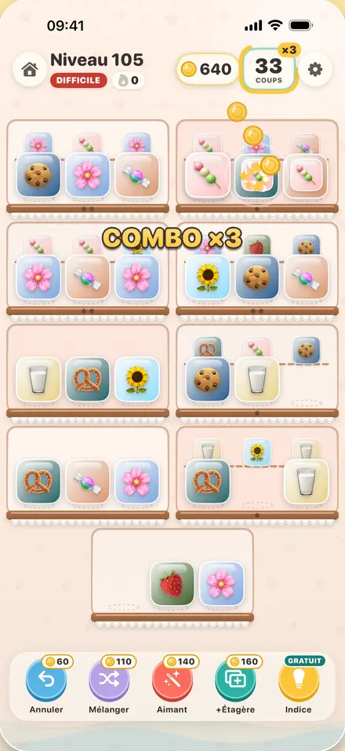
Enchaîne les trios pour un combo 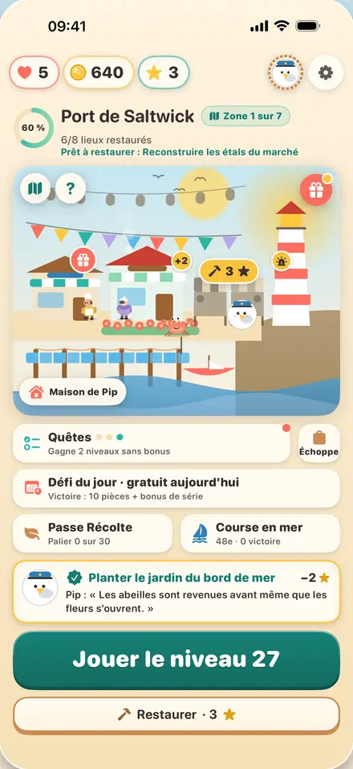
Une ville qui te répond 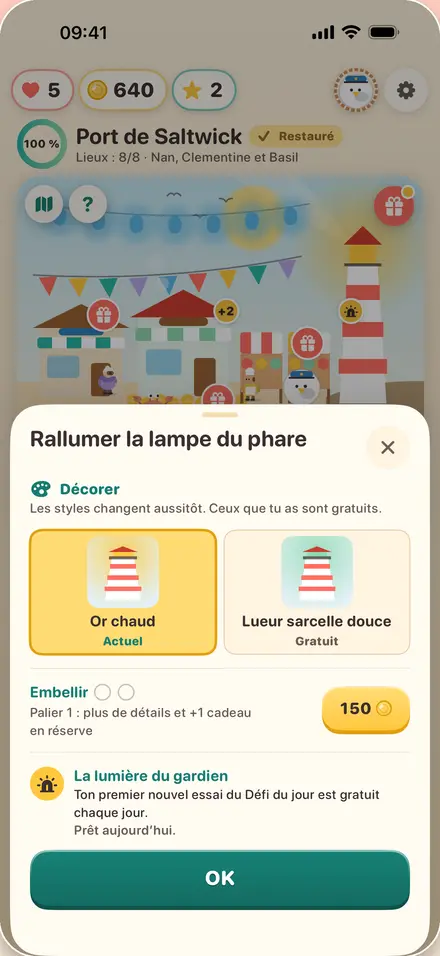
Décore chaque lieu à ton goût 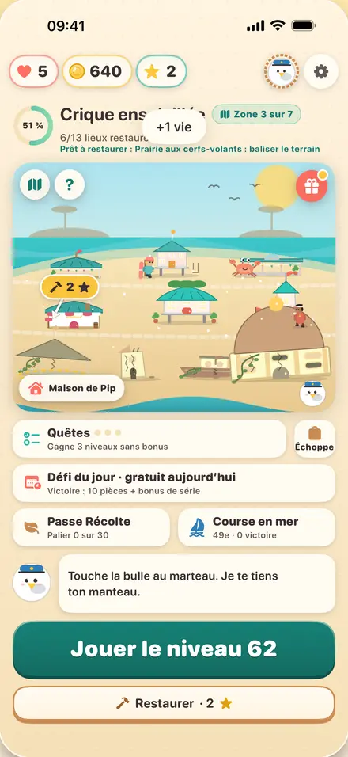
Les lieux restaurés t'offrent des cadeaux 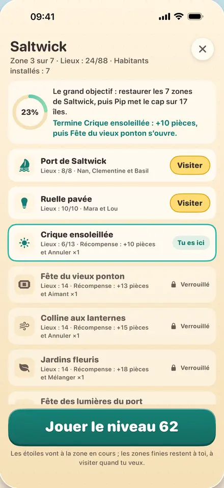
Sept zones à faire revivre 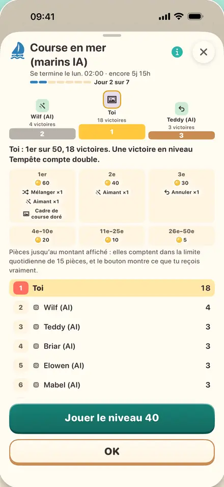
Prends la tête chaque semaine
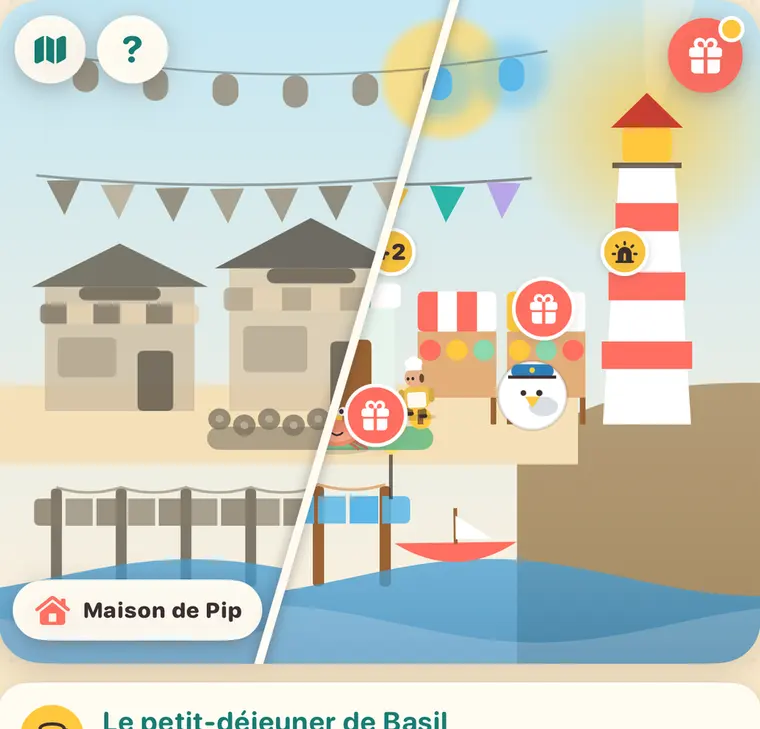
Une ville qui te répond
Gagne des étoiles, rebâtis Saltwick
- Sept quartiers à rénover, du port de Saltwick à la Fête des lumières du port, puis les îles
- Des habitants comme Nan, Basil, Clementine et Mara s'installent dès que leur maison est réparée : ils flânent sur la promenade, et il suffit de les toucher pour qu'ils te parlent
- Chaque rénovation est une courte conversation : l'habitant parle, Pip le goéland du port répond
- La boulangerie et le phare servent à quelque chose : le petit-déjeuner de Basil ajoute 2 coups à ton premier niveau du jour, et le gardien du phare t'offre le premier nouvel essai du Défi du jour
Fais connaissance avec les habitants

Pip
Pip, le goéland du port, t'accueille à Saltwick et a une réponse pour tout le monde.

Nan
Nan revient s'installer dès que son coin du port est rénové, et elle a toujours un mot pour toi.

Clementine
Clementine, le crabe de la promenade, te répond dès que tu touches l'écran.
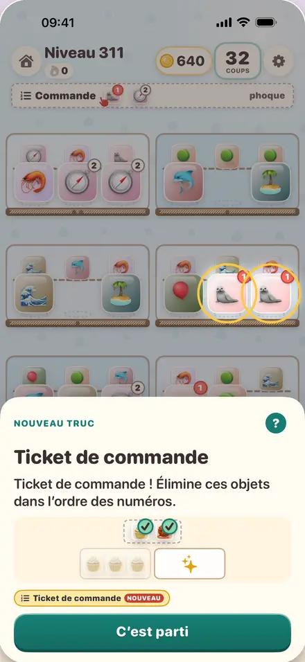
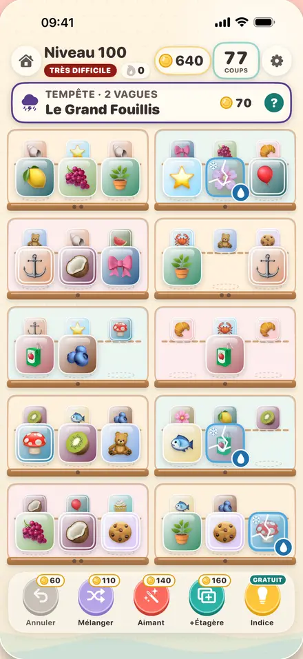
De nouveaux trucs, un à la fois
- Étagères fêlées, goulottes, carrousels, comptoirs, blizzards et tickets de commande rejoignent la glace, les cadenas, les cadeaux, les chaînes, les caisses, le brouillard, les niveaux chrono et le tapis roulant
- Une fiche de début de niveau montre chaque nouveau truc avec les objets du niveau avant ton premier coup, et le guide « Comment jouer » garde chaque règle à portée de doigt
- Les trucs se combinent, des variantes arrivent, et les doubles services envoient une deuxième vague d'objets sur le plateau
Un vrai défi
- La difficulté monte vraiment : niveaux DIFFICILES, niveaux TRÈS DIFFICILES, niveaux Tempête, niveaux mystère et pauses tranquilles
- Des plateaux en tours, en escaliers, en colonnes séparées, en étagères ouvertes et plus encore
- Les bonus Annuler, Mélanger et Aimant quand tu les veux, jamais imposés
Ce qui rend Sortwick différent
Un petit téléchargement
Environ 25 Mo. Installé en un instant, il laisse de la place à tes photos.
Jouable hors ligne
Sans compte ni connexion : dans le train, en avion, partout.
Des coups, pas de compte à rebours
Les niveaux sont limités en coups : tu peux prendre le temps de réfléchir. Seuls les rares niveaux chrono se jouent contre la montre.
Aucune pub imposée pendant les 100 premiers niveaux
Les pubs entre les niveaux sont rares, c'est voulu, et jamais après une défaite. Les vidéos récompensées restent toujours ton choix.
Pensé pour chaque écran
Sortwick s'adapte à ton écran : l'iPhone, le grand écran intérieur d'un téléphone pliable et l'iPad.
Cosy et hors ligne
- Se joue hors ligne, sans compte
- Cadeaux du jour, quêtes, un Défi du jour, une Course en mer chaque semaine et une saison de 28 jours
- Collectionne les cartes de l'album, débloque des succès et décore la maison de Pip avec les meubles que tu collectionnes
- Gratuit. Les achats ne changent jamais la solution d'un niveau, et les caisses de l'album ne s'achètent pas : leurs probabilités sont toujours affichées
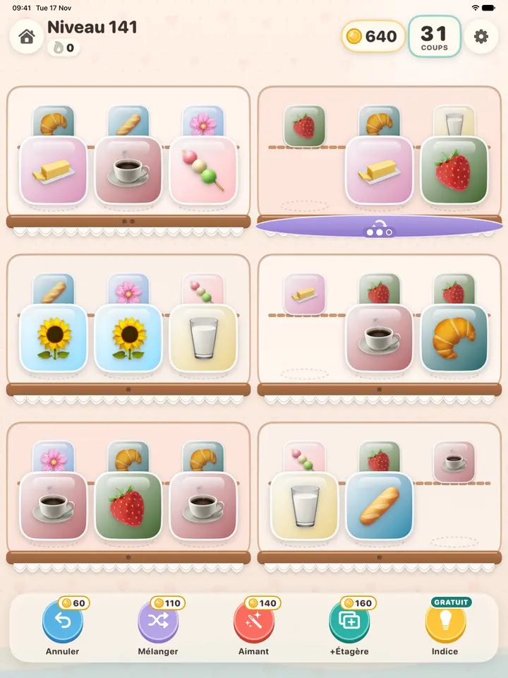
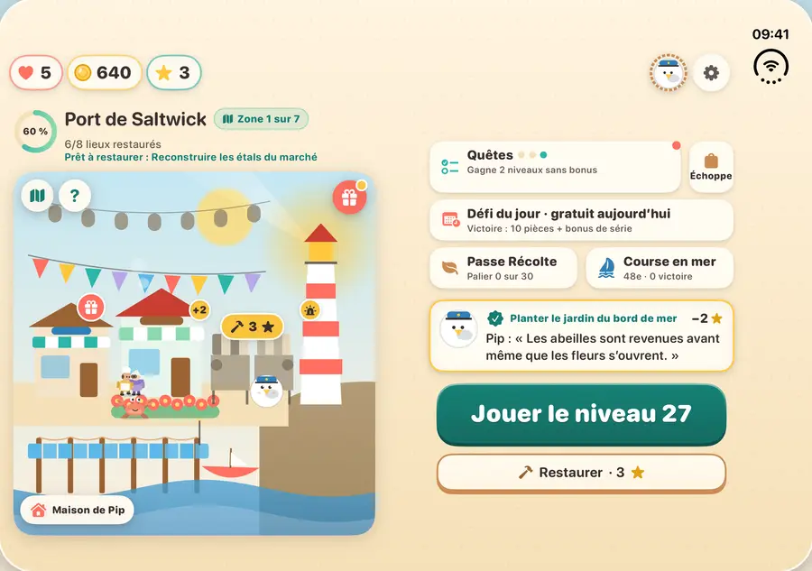
Bientôt disponible
Android : aide-nous à tester
Sortwick pour Android est en test fermé sur Google Play et n'est pas encore sorti. Rejoins le test, joue en avant-première et dis-nous ce que tu en penses.
Rejoindre le test AndroidLa page du test est en anglais.

Questions
Qu'est-ce qu'un jeu de tri d'objets ?
Un jeu de tri d'objets (aussi appelé goods sort, triple match ou match 3 d'objets) est un puzzle où tu déplaces des objets entre des étagères jusqu'à en réunir trois identiques, qui disparaissent. Sortwick est un jeu de tri de ce genre, avec une ville au bord de la mer à rénover grâce aux étoiles gagnées.
Sortwick est-il gratuit ?
Oui. Le téléchargement et le jeu sont gratuits. Les achats sont facultatifs et ne changent jamais la solution d'un niveau, et les vidéos récompensées restent toujours ton choix.
Peut-on jouer à Sortwick hors ligne ?
Oui. Les niveaux, la ville et ta progression fonctionnent sans Internet et sans compte. Seuls les à-côtés comme les classements, les achats et les vidéos récompensées demandent une connexion.
Existe-t-il un jeu de tri sans pubs imposées ?
Dans Sortwick, aucune pub n'interrompt les 100 premiers niveaux, et il n'y en a jamais après une défaite. Ensuite, les pubs entre les niveaux restent rares, c'est voulu, et un seul achat (« Supprimer les pubs ») les retire pour de bon.
En quoi Sortwick diffère-t-il des autres jeux de tri d'objets ?
Les niveaux sont limités en coups et non par un compte à rebours (seuls les rares niveaux chrono se jouent contre la montre), et chaque niveau a une solution. S'y ajoutent une ville dont les habitants te répondent, un petit téléchargement d'environ 25 Mo et le jeu hors ligne.
Comment marchent les vies ?
Un niveau raté coûte une vie ; les premiers niveaux se rejouent librement. Les vies se rechargent toutes seules avec le temps. Quand tu n'en as plus, une vidéo gratuite t'en rend une, la boutique vend une recharge en pièces, VIP du port ajoute une vie supplémentaire, et le Pack de départ comprend 1 heure de vies illimitées.
Y a-t-il des pubs ?
Aucune dans les premiers niveaux. Ensuite, les vidéos récompensées sont toujours ton choix (une vie en plus, quelques coups de plus, un bonus gratuit). Les pubs entre les niveaux sont rares, c'est voulu : aucune pendant les 100 premiers niveaux et jamais après une défaite. « Supprimer les pubs » (un seul achat), VIP du port et tout achat récent les désactivent ; les vidéos facultatives restent. Juste après le niveau 1, le jeu demande ton consentement publicitaire (dans l'EEE, au Royaume-Uni et en Suisse) et s'il peut utiliser ton identifiant publicitaire ; si tu refuses, les pubs ne sont simplement pas personnalisées.
Que peut-on acheter ?
Tout est facultatif. Des packs de 500, 1 400, 3 100 et 8 500 pièces ; un Pack de départ unique avec 900 pièces, 6 bonus et 1 heure de vies illimitées ; VIP du port, un abonnement mensuel avec 60 pièces par jour, un coffre hebdomadaire, une vie supplémentaire et aucune pub entre les niveaux ; le Passe Récolte Premium pour la saison de 28 jours ; et « Supprimer les pubs ». Les prix s'affichent dans la devise de ton App Store à côté de chaque bouton Acheter, et Apple te demande de confirmer avant tout paiement. Les pièces servent à continuer, aux vies et aux bonus ; elles ne changent jamais la solution d'un niveau. Tu peux fixer une limite de dépenses quotidienne dans les réglages.
Comment restaurer mes achats ou annuler VIP du port ?
Ouvre la boutique du jeu et touche « Restaurer les achats », connecté avec le même compte Apple que pour l'achat. VIP du port se renouvelle chaque mois jusqu'à ce que tu l'annules dans Réglages iOS > ton nom > Abonnements, au moins 24 heures avant la date de renouvellement. Les remboursements sont gérés par Apple.
Le jeu utilise-t-il Game Center ?
Oui, si tu es connecté. Ton score du Défi du jour et tes victoires de la Course en mer hebdomadaire alimentent deux classements, et 91 succès suivent ta progression. Déconnecté, rien n'est envoyé et le jeu se joue exactement pareil ; il n'affiche jamais son propre écran de connexion.
Quelles données le jeu collecte-t-il ?
Aucune donnée personnelle : il n'y a pas de compte, et nous n'avons aucun serveur qui reçoit tes données. Le jeu envoie des statistiques de jeu anonymes, sans donnée personnelle, pour nous aider à l'équilibrer ; tu peux les désactiver dans les réglages. La progression reste sur ton iPhone et, si tu utilises iCloud, dans ton propre compte iCloud. Les pubs viennent de Google AdMob, qui reçoit les données publicitaires habituelles, personnalisées seulement avec ton accord. Les scores Game Center et les achats sont gérés par Apple. Les détails sont dans la politique de confidentialité.
Quels appareils et quelles langues ?
iPhone avec iOS 17 ou plus récent ; le jeu fonctionne aussi sur iPad. En français, anglais, allemand, espagnol, italien, portugais (Brésil), roumain, japonais et coréen.
Prêt à ranger quelques étagères ?
Gratuit sur l'App Store. Pip t'attend au port.